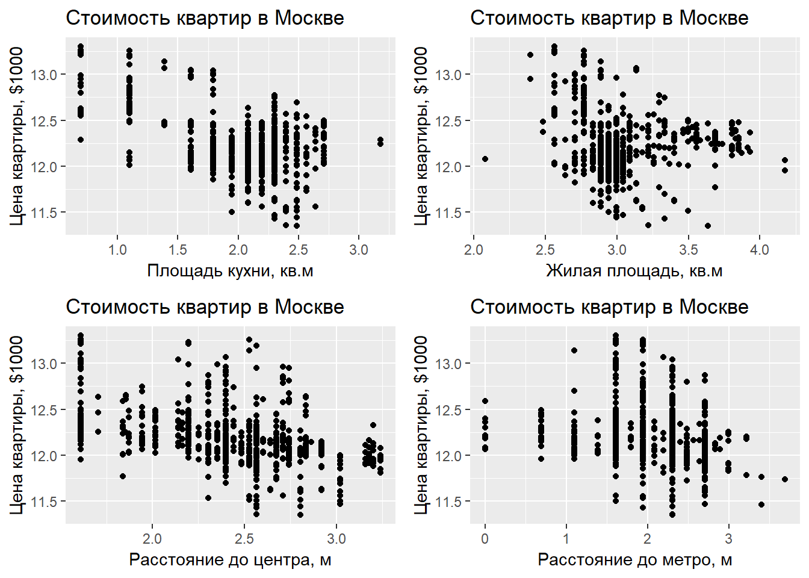

Коан 8 Гетероскедастичность в простой регрессии
Одним из нарушений условий ТГМ является гетероскедастичность, возникающая ввиду неодинаковых дисперсий для разных наблюдений. Она нежелательна ввиду того, что оценки МНК не являются эффективными (но остаются несмещёнными), и предпосылки для использования
t-статистик нарушены, что даёт неверный результат о значимости коэффициентов.
Этот коан благословит Вас на поиски гетероскедастичности и просветит о способах борьбы с ней.
Будем анализировать гетероскедастичность на данных о стоимости квартир.
Мини-теория:
Тест Уайта
Он неконструктивный, он может лишь показать наличие гетероскедастичности, асимптотический. Нормальность остатков в предпосылках не требуется, подразумевается, что \[E({\varepsilon^4_i}) = const\].
\[ \begin{cases} H_0: \sigma^2_i = \sigma^2 \\ H_1: \sigma^2_i \neq = \sigma^2 \\ \end{cases} \]
На первом шаге тест сохраняет остатки от построения начальной регрессии. \[ \hat{\ln{(pricemetr_i)}} = \hat{\beta}_0 + \hat{\beta}_{\ln{(kitsp)}} \cdot \ln{(kitsp_i)} + \hat{\beta}_{\ln{(livesp)}}\cdot \ln{(livesp_i)} + \hat{\beta}_{\ln{(dist)}}\cdot \ln{(dist_i)} + \hat{\beta}_{\ln{(metrdist)}}\cdot \ln{(metrdist_i)} \] На втором - строится вспомогательная регрессия (X_j-вектор j-го фактора). \[ \hat{e}^2_i = \hat{\alpha}_0 + \sum_{j=1}^{k} \hat{\alpha}_j \cdot X_j + \sum_{j=1}^{k} \hat{\gamma}_j \cdot X^2_j + \sum_{j < m}^{k} \hat{\delta}_j X_j \cdot X_m \]
R-squared построенной вспомогательной регрессии должен быть распределён как: \[
n \cdot R^2_{aux} \sim \chi^2_{K-1}
\] где K – число факторов во вспомогательной регрессии.
Тест Бройша - Пагана
Тест Бройша - Пагана — обобщённый вариант теста Уайта. В тесте Бройша-Пагана во вспомогательной регрессии можно брать любые функции от регрессоров, в тесте Уайта - регрессоры, их квадраты и кросс-произведения. Тест Бройша-Пагана является асимптотическим.
\[ \begin{cases} H_0: \sigma^2_i = \sigma^2 \\ H_1: \sigma^2_i \propto f(\alpha_0 + \alpha_1 \cdot Z_1 + \ldots + \alpha_p \cdot Z_p) \\ \end{cases} \]
Классическая версия Бройша - Пагана строится на основе метода максимального правдоподобия. Предпосылками классической версии теста являются нормальность остатков, существование у функции дисперсии из альтернативной гипотезы первой и второй производной. Считается LM-статистика, которая, при верной основной гипотезе об отсутствии гетероскедастичности, имеет хи-квадратное распределение с p-1 степенью свободы.
Современная модификация теста не требует нормальности остатков, лишь \[{\mathbb E}({\varepsilon^4_i}) = const\].
На первом шаге строится исходная регрессия и сохраняются остатки. Затем строится состоятельная оценка дисперсии: \[ \hat{\sigma}^2 = \frac{1}{n} \cdot \sum_{i=1}^{n} {e^2_i} \]
Потом строится вспомогательная регрессия:
\[ \frac{e^2}{\hat{\sigma}^2} = \alpha_0 + \alpha_1 \cdot Z_1 + \ldots + \alpha_p \cdot Z_p + u \]
И рассчитывается тестовая статистика:
\[ \frac{RSS_{aux}}{2} \sim \chi^2_{p} \]
Тест Голдфелда - Квандта
\[ \begin{cases} H_0: \sigma^2_i = \sigma^2 \\ H_1: \sigma^2_i \propto X_i \\ \end{cases} \]
Этот тест предполагает нормальность остатков и является неасимптотическим.
Процедура:
Сначала все наблюдения сортируются по возрастанию абсолютного значения фактора, вызывающего гетероскедастичность.
Затем отсортированный ряд по фактору делится на 3 примерно равные части. Считаются гетероскедастичности по первой и третьей части ряда. Строится F- статистика:
\[ \frac{RSS_2}{RSS_1} \sim F_{r - k, r-k} \]
WLS как способ борьбы с гетероскедастичностью
Веса – оценка обратной дисперсии переменной, вызывающей гетероскедачность.
То есть оценим регрессию: \[ \frac{\ln{(pricemetr_i)}}{\hat{\sigma}_i} = \frac{\beta_0}{\hat{\sigma}_i} + \frac{\beta_{\ln{(kitsp)}} \cdot \ln{(kitsp_i)}}{\hat{\sigma}_i} + \frac{\beta_{\ln{(livesp)}} \cdot \ln{(livesp_i)}}{\hat{\sigma}_i} + \frac{\beta_{\ln{(dist)}} \cdot \ln{(dist_i)}}{\hat{\sigma}_i} + \frac{\beta_{\ln{(metrdist)}} \cdot \ln{(metrdist_i)}}{\hat{\sigma}_i} + \frac{\varepsilon_i}{\hat{\sigma}_i} \]
где r - размер первой и третьей частей отсортированного ряда.
8.1 R
Вызовем r в помощь в охоте на гетероскедастичность. Импортируем его оружейные пакеты.
library(rio) # импорт и экспорт данных в разных форматах
library(dplyr) # манипуляции с данными
library(lmtest) # тест Бройша-Пагана
library(sandwich) # оценка дисперсии при гетероскедастичности
library(UStatBookABSC) # WLS
library (estimatr) # получение робастных оценок
library(ggpubr) # для графиков
library(skimr) # для описательных статистикИмпортируем наш dataset, flats.dta:
flats= import("flats_10.dta")Error in import("flats_10.dta"): No such fileРассмотрим описательные статистики загруженного датасета.
skim(flats)Skim summary statistics
n obs: 773
n variables: 44
-- Variable type:character -------------------------------------
variable missing complete n min max empty n_unique
okrug 0 773 773 0 4 1 4
sanuzel__1_razdel__0_sovm_ 0 773 773 1 2 0 3
-- Variable type:numeric ---------------------------------------
variable missing complete n mean sd p0
bal 0 773 773 0.53 0.5 0
brick 0 773 773 0.16 0.37 0
dist 0 773 773 12.19 4.66 5
floor 0 773 773 0.83 0.38 0
floor1 0 773 773 0.097 0.3 0
floor2 0 773 773 0.074 0.26 0
floors 0 773 773 15.71 9.09 3
kitsp 0 773 773 8.09 2.85 2
livesp 0 773 773 21.45 7.25 8
ln_dist 0 773 773 2.43 0.4 1.61
ln_dist_sq 0 773 773 6.04 1.88 2.59
ln_floors 0 773 773 2.59 0.59 1.1
ln_floors_sq 0 773 773 7.05 3.03 1.21
ln_kitsp 0 773 773 2.02 0.41 0.69
ln_kitsp_sq 0 773 773 4.24 1.48 0.48
ln_livesp 0 773 773 3.02 0.27 2.08
ln_livesp_sq 0 773 773 9.22 1.74 4.32
ln_metrdist 0 773 773 2.04 0.55 0
ln_metrdist_sq 0 773 773 4.49 2.07 0
ln_metrdist_walk 0 773 773 0.97 1.09 0
ln_nfloor 0 773 773 1.7 0.89 0
ln_nfloor_sq 0 773 773 3.69 3.04 0
ln_price_meter 0 773 773 12.19 0.3 11.35
ln_price_metr 0 773 773 12.19 0.3 11.35
ln_totsp 0 773 773 3.6 0.28 2.71
ln_totsp_sq 0 773 773 13.01 1.94 7.33
ln_totsp2 0 773 773 13.01 1.94 7.33
ln_totsp3 0 773 773 28.34 8.55 8.99
metrdist 0 773 773 8.83 4.44 1
n 0 773 773 395.48 228.89 1
new 0 773 773 0.31 0.46 0
nfloor 0 773 773 7.93 7.99 1
non_livesp 0 773 773 8.29 4.65 0
nw 0 773 773 0.41 0.49 0
price 0 773 773 7548674.66 2492693.71 3300000
price_meter 0 773 773 207308.48 74861.22 84930.44
rooms 0 773 773 1 0 1
sw 0 773 773 0.39 0.49 0
tel 0 773 773 0.91 0.3 0
totsp 0 773 773 37.82 9.9 15
w 0 773 773 0.2 0.4 0
walk 0 773 773 0.46 0.5 0
p25 p50 p75 p100 hist
0 1 1 1 <U+2587><U+2581><U+2581><U+2581><U+2581><U+2581><U+2581><U+2587>
0 0 0 1 <U+2587><U+2581><U+2581><U+2581><U+2581><U+2581><U+2581><U+2582>
9 11.5 15 25.5 <U+2587><U+2586><U+2587><U+2587><U+2585><U+2581><U+2581><U+2582>
1 1 1 1 <U+2582><U+2581><U+2581><U+2581><U+2581><U+2581><U+2581><U+2587>
0 0 0 1 <U+2587><U+2581><U+2581><U+2581><U+2581><U+2581><U+2581><U+2581>
0 0 0 1 <U+2587><U+2581><U+2581><U+2581><U+2581><U+2581><U+2581><U+2581>
9 14 19 48 <U+2583><U+2587><U+2583><U+2582><U+2581><U+2581><U+2582><U+2581>
6 8 10 24 <U+2582><U+2585><U+2587><U+2582><U+2581><U+2581><U+2581><U+2581>
18 19 21 65 <U+2581><U+2587><U+2581><U+2581><U+2581><U+2581><U+2581><U+2581>
2.2 2.44 2.71 3.24 <U+2583><U+2583><U+2583><U+2587><U+2587><U+2587><U+2583><U+2582>
4.83 5.97 7.33 10.49 <U+2583><U+2582><U+2586><U+2586><U+2587><U+2583><U+2581><U+2582>
2.2 2.64 2.94 3.87 <U+2581><U+2583><U+2581><U+2585><U+2587><U+2586><U+2583><U+2582>
4.83 6.96 8.67 14.99 <U+2583><U+2581><U+2587><U+2587><U+2582><U+2582><U+2583><U+2581>
1.79 2.08 2.3 3.18 <U+2581><U+2581><U+2581><U+2583><U+2587><U+2585><U+2581><U+2581>
3.21 4.32 5.3 10.1 <U+2582><U+2582><U+2586><U+2587><U+2586><U+2581><U+2581><U+2581>
2.89 2.94 3.04 4.17 <U+2581><U+2581><U+2582><U+2587><U+2581><U+2581><U+2581><U+2581>
8.35 8.67 9.27 17.43 <U+2581><U+2581><U+2587><U+2582><U+2581><U+2581><U+2581><U+2581>
1.61 2.3 2.3 3.69 <U+2581><U+2581><U+2581><U+2583><U+2587><U+2583><U+2581><U+2581>
2.59 5.3 5.3 13.61 <U+2582><U+2586><U+2583><U+2587><U+2583><U+2581><U+2581><U+2581>
0 0 2.08 3.69 <U+2587><U+2581><U+2581><U+2582><U+2583><U+2581><U+2581><U+2581>
1.1 1.79 2.4 4.84 <U+2583><U+2586><U+2587><U+2587><U+2585><U+2582><U+2581><U+2581>
1.21 3.21 5.75 23.47 <U+2587><U+2585><U+2582><U+2581><U+2581><U+2581><U+2581><U+2581>
12.03 12.15 12.32 13.3 <U+2581><U+2581><U+2586><U+2587><U+2582><U+2581><U+2581><U+2581>
12.03 12.15 12.32 13.3 <U+2581><U+2581><U+2586><U+2587><U+2582><U+2581><U+2581><U+2581>
3.47 3.64 3.74 4.32 <U+2581><U+2581><U+2581><U+2585><U+2587><U+2582><U+2582><U+2581>
12.01 13.23 13.97 18.64 <U+2581><U+2581><U+2581><U+2587><U+2587><U+2582><U+2581><U+2581>
12.01 13.23 13.97 18.64 <U+2581><U+2581><U+2581><U+2587><U+2587><U+2582><U+2581><U+2581>
24.15 25.53 28.22 72.74 <U+2581><U+2583><U+2587><U+2581><U+2581><U+2581><U+2581><U+2581>
5 10 10 40 <U+2585><U+2587><U+2583><U+2581><U+2581><U+2581><U+2581><U+2581>
196 397 595 788 <U+2587><U+2587><U+2587><U+2587><U+2587><U+2587><U+2587><U+2587>
0 0 1 1 <U+2587><U+2581><U+2581><U+2581><U+2581><U+2581><U+2581><U+2583>
3 6 11 127 <U+2587><U+2581><U+2581><U+2581><U+2581><U+2581><U+2581><U+2581>
5 8 11 25 <U+2585><U+2585><U+2587><U+2587><U+2582><U+2581><U+2581><U+2581>
0 0 1 1 <U+2587><U+2581><U+2581><U+2581><U+2581><U+2581><U+2581><U+2586>
5750000 6700000 8600000 1.8e+07 <U+2581><U+2587><U+2583><U+2582><U+2582><U+2581><U+2581><U+2581>
167187.5 189393.9 223076.9 6e+05 <U+2582><U+2587><U+2582><U+2581><U+2581><U+2581><U+2581><U+2581>
1 1 1 1 <U+2581><U+2581><U+2581><U+2587><U+2581><U+2581><U+2581><U+2581>
0 0 1 1 <U+2587><U+2581><U+2581><U+2581><U+2581><U+2581><U+2581><U+2585>
1 1 1 3 <U+2581><U+2581><U+2587><U+2581><U+2581><U+2581><U+2581><U+2581>
32 38 42 75 <U+2582><U+2581><U+2587><U+2587><U+2582><U+2582><U+2581><U+2581>
0 0 0 1 <U+2587><U+2581><U+2581><U+2581><U+2581><U+2581><U+2581><U+2582>
0 0 1 1 <U+2587><U+2581><U+2581><U+2581><U+2581><U+2581><U+2581><U+2587>Построим простую линейную регрессионную модель, на которой будем проверять гетероскедастичность.
reg = lm(ln_price_metr ~ 1 + ln_livesp + ln_kitsp + ln_dist + ln_metrdist, data = flats)
summary(reg)
Call:
lm(formula = ln_price_metr ~ 1 + ln_livesp + ln_kitsp + ln_dist +
ln_metrdist, data = flats)
Residuals:
Min 1Q Median 3Q Max
-0.62723 -0.16125 -0.00845 0.13614 0.77618
Coefficients:
Estimate Std. Error t value Pr(>|t|)
(Intercept) 14.19920 0.13492 105.243 < 2e-16 ***
ln_livesp -0.16053 0.03723 -4.312 1.83e-05 ***
ln_kitsp -0.29913 0.02300 -13.007 < 2e-16 ***
ln_dist -0.33025 0.02367 -13.952 < 2e-16 ***
ln_metrdist -0.05738 0.01560 -3.679 0.000251 ***
---
Signif. codes: 0 '***' 0.001 '**' 0.01 '*' 0.05 '.' 0.1 ' ' 1
Residual standard error: 0.2309 on 768 degrees of freedom
Multiple R-squared: 0.4179, Adjusted R-squared: 0.4149
F-statistic: 137.9 on 4 and 768 DF, p-value: < 2.2e-16Проверим наличие гетероскедастичности визуально. Построим зависимости цены квартир от объясняющих факторов.
kit = ggplot(flats) + geom_point(aes(x = ln_kitsp, y = ln_price_metr)) +
labs(x = "Площадь кухни, кв.м", y = "Цена квартиры, $1000",
title = "Стоимость квартир в Москве")
live = ggplot(flats) + geom_point(aes(x = ln_livesp, y = ln_price_metr)) +
labs(x = "Жилая площадь, кв.м", y = "Цена квартиры, $1000",
title = "Стоимость квартир в Москве")
dist = ggplot(flats) + geom_point(aes(x = ln_dist, y = ln_price_metr)) +
labs(x = "Расстояние до центра, м", y = "Цена квартиры, $1000",
title = "Стоимость квартир в Москве")
metrdist = ggplot(flats) + geom_point(aes(x = ln_metrdist, y = ln_price_metr)) +
labs(x = "Расстояние до метро, м", y = "Цена квартиры, $1000",
title = "Стоимость квартир в Москве")
ggarrange(kit, live, dist, metrdist, ncol = 2, nrow = 2)
Из сета красивых графиков видно, что гетероскедастичность присутствует. В частности, подозрительны переменные ln_kitsp и ln_metrdist.
Проверим наличие гетероскедастичности с помощью тестов.
Начнём с теста Уайта.
Тест Уайта реализуется в r (ручками) как:
bptest(reg, varformula = ~ 1 + ln_livesp + ln_kitsp + ln_dist + ln_metrdist + I(ln_livesp ^ 2) + I(ln_kitsp ^ 2) + I(ln_dist ^ 2) + I(ln_metrdist ^ 2) + I(ln_livesp * ln_kitsp) + I(ln_livesp * ln_dist) + I(ln_livesp * ln_metrdist) + I(ln_kitsp * ln_dist) + I(ln_kitsp * ln_metrdist) + I(ln_dist * ln_metrdist), data = flats)
studentized Breusch-Pagan test
data: reg
BP = 89.02, df = 14, p-value = 5.81e-13Тест Уайта выявил гетероскедастичность.
Проведём тест Бройша - Пагана.
Классическая версия Бройша - Пагана реализуется в r по команде:
bptest(reg, studentize = FALSE)
Breusch-Pagan test
data: reg
BP = 18.39, df = 4, p-value = 0.001035Модифицированная версия теста Бройша - Пагана реализуется по команде:
bptest(reg)
studentized Breusch-Pagan test
data: reg
BP = 15.778, df = 4, p-value = 0.003332Причем, если отдельно не указать спецификацию вспомогательной регрессии, то bptest() возьмёт все регрессоры исходной модели.
В обеих версиях теста Бройша - Пагана гетероскедастичность обнаружена.
Ещё есть тест Голдфелда - Квандта.
Данный тест в r реализуется по командам (предполагается, что дисперсии пропорциональны переменной ln_kitsp):
flats_ordered = flats[order(flats$ln_kitsp), ]
reg_gqtest = lm(ln_price_metr ~ 1 + ln_livesp + ln_kitsp + ln_dist + ln_metrdist, data = flats_ordered)
gqtest(reg_gqtest, fraction = 0.34) # посередине отсортированного ряда лежит 34% наблюдений
Goldfeld-Quandt test
data: reg_gqtest
GQ = 1.1072, df1 = 251, df2 = 250, p-value = 0.2106
alternative hypothesis: variance increases from segment 1 to 2Будет также полезным познакомиться с методами борьбы с гетероскедастичностью.
Способ 1. Взвешенный МНК. В r его можно осуществить так:
reg_wls = lm(ln_price_metr ~ 1 + ln_livesp + ln_kitsp + ln_dist + ln_metrdist, data = flats, weights = 1 / (1 / fitted(lm(abs(residuals(reg)) ~ ln_kitsp)) ^ 2))
summary(reg_wls)
Call:
lm(formula = ln_price_metr ~ 1 + ln_livesp + ln_kitsp + ln_dist +
ln_metrdist, data = flats, weights = 1/(1/fitted(lm(abs(residuals(reg)) ~
ln_kitsp))^2))
Weighted Residuals:
Min 1Q Median 3Q Max
-0.105299 -0.029659 -0.001107 0.025053 0.155867
Coefficients:
Estimate Std. Error t value Pr(>|t|)
(Intercept) 14.28313 0.13557 105.357 < 2e-16 ***
ln_livesp -0.16102 0.03849 -4.183 3.2e-05 ***
ln_kitsp -0.33901 0.02245 -15.098 < 2e-16 ***
ln_dist -0.33075 0.02406 -13.749 < 2e-16 ***
ln_metrdist -0.05859 0.01587 -3.691 0.000239 ***
---
Signif. codes: 0 '***' 0.001 '**' 0.01 '*' 0.05 '.' 0.1 ' ' 1
Residual standard error: 0.04242 on 768 degrees of freedom
Multiple R-squared: 0.4683, Adjusted R-squared: 0.4655
F-statistic: 169.1 on 4 and 768 DF, p-value: < 2.2e-16Способ 2. Робастные оценки Уайта.
coeftest(reg, vcov = vcovHC(reg, "HC0"))
t test of coefficients:
Estimate Std. Error t value Pr(>|t|)
(Intercept) 14.199195 0.158790 89.4210 < 2.2e-16 ***
ln_livesp -0.160528 0.040845 -3.9302 9.253e-05 ***
ln_kitsp -0.299130 0.028398 -10.5336 < 2.2e-16 ***
ln_dist -0.330251 0.023965 -13.7803 < 2.2e-16 ***
ln_metrdist -0.057375 0.014528 -3.9494 8.555e-05 ***
---
Signif. codes: 0 '***' 0.001 '**' 0.01 '*' 0.05 '.' 0.1 ' ' 1Робастные оценки коэффициентов регрессии получаются состоятельными.
8.2 Python
Теперь попробуем проделать эти шаги в python.
Импотируем необходимые пакеты.
import numpy as np
import pandas as pd # чтение файлов
import matplotlib.pyplot as plt # построение графиков
import seaborn as sns # построение графиков
import statsmodels.api as sm # тесты
from statsmodels.formula.api import ols, WLS # построение регрессии
import statsmodels
import statsmodels.stats.diagnostic as sm_diagnostic # тест Бройша-ПаганаЗагрузим исследуемый датасет.
flats = pd.read_stata("flats_10.dta");Error in py_call_impl(callable, dots$args, dots$keywords): FileNotFoundError: [Errno 2] No such file or directory: 'flats_10.dta'
Detailed traceback:
File "<string>", line 1, in <module>
File "C:\Users\Yuliya\AppData\Local\Programs\Python\Python37\lib\site-packages\pandas\util\_decorators.py", line 188, in wrapper
return func(*args, **kwargs)
File "C:\Users\Yuliya\AppData\Local\Programs\Python\Python37\lib\site-packages\pandas\util\_decorators.py", line 188, in wrapper
return func(*args, **kwargs)
File "C:\Users\Yuliya\AppData\Local\Programs\Python\Python37\lib\site-packages\pandas\io\stata.py", line 186, in read_stata
chunksize=chunksize)
File "C:\Users\Yuliya\AppData\Local\Programs\Python\Python37\lib\site-packages\pandas\util\_decorators.py", line 188, in wrapper
return func(*args, **kwargs)
File "C:\Users\Yuliya\AppData\Local\Programs\Python\Python37\lib\site-packages\pandas\util\_decorators.py", line 188, in wrapper
return func(*args, **kwargs)
File "C:\Users\Yuliya\AppData\Local\Programs\Python\Python37\lib\site-packages\pandas\io\stata.py", line 994, in __init__
self.path_or_buf = open(path_or_buf, 'rb')Построим линейную регрессионную модель.
reg = ols("ln_price_metr ~ 1 + ln_livesp + ln_kitsp + ln_dist + ln_metrdist", flats).fit()
reg.summary()<class 'statsmodels.iolib.summary.Summary'>
"""
OLS Regression Results
==============================================================================
Dep. Variable: ln_price_metr R-squared: 0.418
Model: OLS Adj. R-squared: 0.415
Method: Least Squares F-statistic: 137.9
Date: Sat, 18 Jan 2020 Prob (F-statistic): 9.06e-89
Time: 00:44:35 Log-Likelihood: 38.744
No. Observations: 773 AIC: -67.49
Df Residuals: 768 BIC: -44.24
Df Model: 4
Covariance Type: nonrobust
===============================================================================
coef std err t P>|t| [0.025 0.975]
-------------------------------------------------------------------------------
Intercept 14.1992 0.135 105.243 0.000 13.934 14.464
ln_livesp -0.1605 0.037 -4.312 0.000 -0.234 -0.087
ln_kitsp -0.2991 0.023 -13.007 0.000 -0.344 -0.254
ln_dist -0.3303 0.024 -13.952 0.000 -0.377 -0.284
ln_metrdist -0.0574 0.016 -3.679 0.000 -0.088 -0.027
==============================================================================
Omnibus: 25.080 Durbin-Watson: 1.309
Prob(Omnibus): 0.000 Jarque-Bera (JB): 26.855
Skew: 0.425 Prob(JB): 1.47e-06
Kurtosis: 3.331 Cond. No. 83.2
==============================================================================
Warnings:
[1] Standard Errors assume that the covariance matrix of the errors is correctly specified.
"""Визуализируем зависимости регрессоров и регрессанта.
sns.pairplot(flats, x_vars=["ln_metrdist", "ln_kitsp", "ln_livesp", "ln_dist"], y_vars=["ln_price_metr"])<seaborn.axisgrid.PairGrid object at 0x0000000045387828>Графики всё такие же красивые, как и в предыдущем пункте:) Подозрительны переменные ln_kitsp и ln_metrdist. Проведём тесты на выявление гетероскедастичности в python.
Рассмотрим тест Бройша - Пагана на всех факторах.
resid = reg.resid
X = flats[["ln_livesp", "ln_kitsp", "ln_dist", "ln_metrdist"]]
sm_diagnostic.het_breuschpagan(resid=resid, exog_het=X)(242.3887600398202, 2.8968538726873906e-52, 87.82180928009087, 1.8044481939655893e-61)Интерпретация результатов теста: Первое из выданных значений - значение тестовой статистики теста Бройша - Пагана, второе - значение p-value для выданной тестовой статистики. Третье и четвёртое - значения тестовой статистики и её p-value для на уровне значимости 5% (табличное). Гетероскедастичность присутствует.
Посмотрим на тест Голдфелда - Квандта по переменной ln_kitsp.
sm_diagnostic.het_goldfeldquandt(y=flats["ln_price_metr"], x=X, alternative="two-sided")(0.5313881847525856, 8.826860679745173e-10, 'two-sided')Значение p-value близко к 0, следовательно, основная гипотеза о гомоскедастичности отвергается.
Теперь о способах борьбы с гетероскедастичностью.
Способ 1. Взвешенный МНК.
Взвешиваем по стандартному отклонению фактора ln_kitsp.
reg_wls = statsmodels.regression.linear_model.WLS(flats["ln_price_metr"], X, weights=flats["ln_kitsp"])
reg_wls_results = reg_wls.fit()
reg_wls_results.summary()<class 'statsmodels.iolib.summary.Summary'>
"""
WLS Regression Results
==============================================================================
Dep. Variable: ln_price_metr R-squared: 0.995
Model: WLS Adj. R-squared: 0.995
Method: Least Squares F-statistic: 3.763e+04
Date: Sat, 18 Jan 2020 Prob (F-statistic): 0.00
Time: 00:44:36 Log-Likelihood: -997.20
No. Observations: 773 AIC: 2002.
Df Residuals: 769 BIC: 2021.
Df Model: 4
Covariance Type: nonrobust
===============================================================================
coef std err t P>|t| [0.025 0.975]
-------------------------------------------------------------------------------
ln_livesp 2.9582 0.071 41.469 0.000 2.818 3.098
ln_kitsp -0.1256 0.095 -1.316 0.189 -0.313 0.062
ln_dist 1.1813 0.068 17.317 0.000 1.047 1.315
ln_metrdist 0.2429 0.057 4.259 0.000 0.131 0.355
==============================================================================
Omnibus: 13.564 Durbin-Watson: 1.132
Prob(Omnibus): 0.001 Jarque-Bera (JB): 23.475
Skew: -0.050 Prob(JB): 7.99e-06
Kurtosis: 3.848 Cond. No. 17.4
==============================================================================
Warnings:
[1] Standard Errors assume that the covariance matrix of the errors is correctly specified.
"""Способ 2. Использование робастных оценок.
reg_robust = reg.get_robustcov_results()
reg_robust.summary()<class 'statsmodels.iolib.summary.Summary'>
"""
OLS Regression Results
==============================================================================
Dep. Variable: ln_price_metr R-squared: 0.418
Model: OLS Adj. R-squared: 0.415
Method: Least Squares F-statistic: 102.5
Date: Sat, 18 Jan 2020 Prob (F-statistic): 5.95e-70
Time: 00:44:36 Log-Likelihood: 38.744
No. Observations: 773 AIC: -67.49
Df Residuals: 768 BIC: -44.24
Df Model: 4
Covariance Type: HC1
===============================================================================
coef std err t P>|t| [0.025 0.975]
-------------------------------------------------------------------------------
Intercept 14.1992 0.159 89.131 0.000 13.886 14.512
ln_livesp -0.1605 0.041 -3.917 0.000 -0.241 -0.080
ln_kitsp -0.2991 0.028 -10.500 0.000 -0.355 -0.243
ln_dist -0.3303 0.024 -13.736 0.000 -0.377 -0.283
ln_metrdist -0.0574 0.015 -3.937 0.000 -0.086 -0.029
==============================================================================
Omnibus: 25.080 Durbin-Watson: 1.309
Prob(Omnibus): 0.000 Jarque-Bera (JB): 26.855
Skew: 0.425 Prob(JB): 1.47e-06
Kurtosis: 3.331 Cond. No. 83.2
==============================================================================
Warnings:
[1] Standard Errors are heteroscedasticity robust (HC1)
"""8.3 Stata
Теперь попробуем поработать в stata.
Импортируем датасет для анализа командой use flats_10.dta.
Построим линейную регрессионную модель.
reg ln_price_metr ln_livesp ln_kitsp ln_dist ln_metrdist Source | SS df MS Number of obs = 773
-------------+------------------------------ F( 4, 768) = 137.86
Model | 29.3972704 4 7.34931759 Prob > F = 0.0000
Residual | 40.9421359 768 .053310073 R-squared = 0.4179
-------------+------------------------------ Adj R-squared = 0.4149
Total | 70.3394063 772 .091113221 Root MSE = .23089
------------------------------------------------------------------------------
ln_price_~tr | Coef. Std. Err. t P>|t| [95% Conf. Interval]
-------------+----------------------------------------------------------------
ln_livesp | -.1605276 .0372309 -4.31 0.000 -.2336141 -.0874411
ln_kitsp | -.2991296 .0229974 -13.01 0.000 -.3442748 -.2539843
ln_dist | -.3302511 .0236707 -13.95 0.000 -.3767181 -.2837841
ln_metrdist | -.0573754 .0155965 -3.68 0.000 -.0879923 -.0267585
_cons | 14.1992 .1349184 105.24 0.000 13.93434 14.46405
------------------------------------------------------------------------------Визуализируем зависимость регрессоров и регрессанта.
(file C:/Users/Yuliya/Documents/GitHub/bdemeshev/Econometrics-Rosetta-Stone/10/kitsp.png wri
> tten in PNG format)
scatter ln_price_metr ln_livesp
scatter ln_price_metr ln_dist
scatter ln_price_metr ln_metrdist
Подозрительны переменные ln_kitsp и ln_metrdist.
Проверим наличие гетероскедастичности с помощью тестов.
Тест Уайта строится по короткой команде:
estat imtest, whitelast estimates not found
r(301);
end of do-file
r(301);Тест Уайта выявил гетероскедастичность. Что скажет тест Бройша - Пагана?
estat hettest, rhs mtestlast estimates not found
r(301);
end of do-file
r(301);И этот тест указывает на наличие нежелательной гетероскедастичности, особенно подозрительны переменные ln_kitsp и ln_metrdist.
Попробуем проверить ещё и через тест Голдфелда - Квандта. Сделаем его ручками.
Отсортируем наблюдения по возрастанию переменной ln_kitsp, построим регрессию и сохраним остатки.
sort ln_kitsp
reg ln_price_metr ln_livesp ln_kitsp ln_dist ln_metrdist in 1 / 258
scalar rss1 = e(rss)no variables defined
r(111);
end of do-file
r(111);Сохраним остатки и в последней части регрессии.
sort ln_kitsp
reg ln_price_metr ln_livesp ln_kitsp ln_dist ln_metrdist in 516 / 773
scalar rss2 = e(rss)no variables defined
r(111);
end of do-file
r(111);Посчитаем тестовую F-статистику.
scalar F = rss2 / rss1
display F
display invFtail(258, 258, 0.05)rss2 not found
r(111);
end of do-file
r(111);Тестовая статистика больше табличной, следовательно, гетероскедастичность присутствует.
Сейчас немного о способах борьбы с гетероскедастичностью. Подправим все коэффициенты исходной регрессии на гетероскедастичную переменную, например, на ln_kitsp.
gen ln_price_metr_new = ln_price_metr / ln_kitsp
gen ln_livesp_new = ln_livesp / ln_kitsp
gen const_new = 1 / ln_kitsp
gen ln_dist_new = ln_dist / ln_kitsp
gen ln_metrdist_new = ln_metrdist / ln_kitspln_price_metr not found
r(111);
end of do-file
r(111);И оценим регрессию с новыми переменными.
reg ln_price_metr_new ln_livesp_new const_new ln_dist_new ln_metrdist_newno variables defined
r(111);
end of do-file
r(111);И полученные оценки будут эффективными оценками коэффициентов исходной регрессии.
Также можно использовать метод взвешенного МНК (WLS). Взвесим на стандартное отклонение фактора ln_kitsp.
vwls ln_price_metr ln_livesp ln_kitsp ln_dist ln_metrdist, sd(ln_kitsp)variable ln_price_metr not found
r(111);
end of do-file
r(111);Способ #2. Используем робастные оценки Уайта.
reg ln_price_metr ln_livesp ln_kitsp ln_dist ln_metrdist, robustno variables defined
r(111);
end of do-file
r(111);Робастные оценки Уайта позволяют снизить последствия гетероскедастичности через уменьшение стандартных ошибок коэффициентов регрессии.